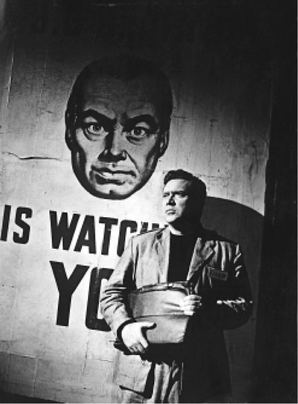
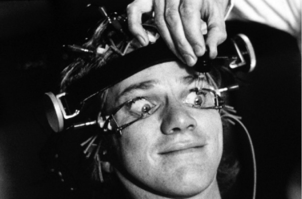

“奥威尔式的”这个形容词已经变成了对极权主义政权的标准描述，指以严酷的制度来实现官方权威的政权。在《华氏451》中，蒙泰戈身兼两职，既是消防队员，又是警察。消防队员实际上是清洁工，因为焚书行为就是“清洁”。虽然布拉德伯里想要让焚书者体现多重身份，但身着黑色制服的警察角色在特吕弗的电影中得到了强化，从他们身上能够发现纳粹的影子。在相对繁荣富裕的背景下，强制依然是家常便饭。乔治·奥威尔的《1984》（1949）呈现了英国战后即将面临残暴统治的严峻现实。在小说中描写的政权统治之下，国家情报部门的设备中回荡着德国纳粹（仇恨周）和斯大林时期的苏联的声音，对官方“历史”的伪造、篡改则永无止境。温斯顿·史密斯和蒙泰戈一样，在国家机器内是一个操作员，被赋予了亲自见证如何毁灭事实证据的罕有机会。布拉德伯里把电视描述为娱乐，奥威尔则强调电视的控制作用：隐藏的摄像头到处都是，甚至在乡村也是如此。他描写了社会成员相互监视、相互揭发的社会，但令人更加不安的是他们从来不知道老大哥——一个存在于人们推想中的国家监控象征——是否正在监视他们。

图12 迈克尔·安德森《1984》（1956）的剧照
史密斯在他的日记中记录了自己的命运。小说冷酷地证实了这种不可避免的情况：隐蔽处响起电子合成的人声，宣告人们被捕了。奥布赖恩告诉吓坏了的史密斯，党内的精英都是自封的、永远的“权力祭司”，因为他们控制着塑造思想和感知的方式。矫正史密斯的态度是不可抗拒的过程，甚至不必带着把他改造成模范公民这样的目的。在小说的结尾处，读者被告知他爱着老大哥，这真是一个讽刺的结局，但是让所有人毛骨悚然的是来自前例的暗示：史密斯很快就会消失，这意味着被处死。
安东尼·伯吉斯的敌托邦小说《1985》（1976）向奥威尔做了致敬，对敌托邦进行了一系列的反思，有意思的是伯吉斯处理这个传统题材的方式。他讨论了奥威尔对扎米亚京创作的借鉴，以及奥威尔对《美妙的新世界》的摒弃，并把自由的命运作为主要议题。但是，伯吉斯对行为主义的敌意渐渐地占据了主要舞台，这种敌意指向苏联对巴甫洛夫的支持，也指向B.F.斯金纳后期的著作，后者对待人类实验对象的做法在《发条橙》中遭到了抨击。伯吉斯在那个时候不可能知道斯金纳还参与了MK–ULTRA计划，这是美国中央情报局的一个秘密的意识控制项目。另外一方面，他确实知道斯金纳也写过一部乌托邦小说，名为《瓦尔登第二》，这部小说探索了行为矫正技术。
《发条橙》（1962）反映了公众对青少年行为不良的焦虑，并将当时的秘密监控实验融入了小说。伯吉斯在小说中使用的奇特语言（在小说中叫“纳德萨特”，意为“青少年”）把俄语、美国腔、伦敦东区俚语混合在了一起。为了做到这点，当时同情报部门有关系的伯吉斯从一名身为东欧通的前中央情报局官员那里得到了帮助。小说的叙事者名为亚历克斯，是一名谙熟街头生活的帮派头目。小说分为三个部分：亚历克斯出于取乐目的而施行暴力的行为，导致他被捕；亚历克斯被监禁并接受矫正治疗；亚历克斯回归社会。让伯吉斯恼怒的是，他的美国出版商起先删掉了最后一章，让亚历克斯陷入了前途未卜的境地。以亚历克斯的口吻来叙事，让读者能够立即感受到这个小群体漫不经心看待暴力和性等的那种心态。因此，这部小说，甚至连同库布里克根据这部小说在1971年执导的电影，都受到了批判，理由是它们美化了亚历克斯团伙的行为。但是，小说的敌托邦诉求实际就体现在对亚历克斯接受的厌恶疗法的描述中，所谓的厌恶疗法就是让对象接触到暴力行为时产生恶心反应的一种对心理的负调控。小说的第二部分对这个过程做了描述。当亚历克斯在看电影的时候，他的眼睛被一种眼科所用的支撑架强行撑开，这是电影中最著名的场景之一。

图13 斯坦利·库布里克《发条橙》（1971）的剧照
伯吉斯一贯地抨击当时行为主义的主要倡导者斯金纳，因为他认为亚历克斯遭受的这种治疗剥夺了治疗对象的意志力。因此，《发条橙》可以被解读为对官方实施的行为控制的抨击，这和玛吉·皮尔西在《时代边缘的女性》（1976）中对主角接受电击厌恶疗法的描写类似，也和托马斯·M.迪施的《集中营》（1982）中叙事者无意间成为政府秘密实验对象的情节类似。这三部小说的叙事者都是实验的对象，他们的主体性都因为实验的恶劣性质而遭到了不同程度的剥夺。